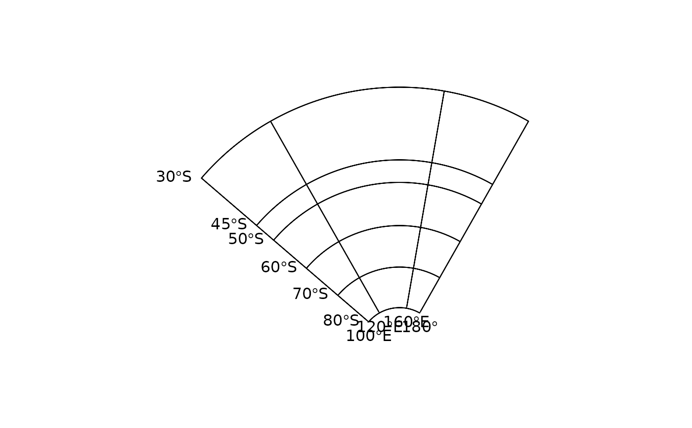

Returns a set of points with labels, for plotting in conjuction with graticule.
graticule_labels(lons, lats, xline, yline, proj = NULL)longitudes for meridional labels
latitudes for parallel labels
meridian/s for placement of parallel labels
parallel/s for placement of meridian labels
optional proj.4 string for output object
SpatialPoints object with labels for downstream use
SpatialPoints are returned in the projection of proj if given, or longlat / WGS84.
xx <- c(100, 120, 160, 180)
yy <- c(-80,-70,-60, -50,-45, -30)
prj <- "+proj=lcc +lon_0=150 +lat_0=-80 +lat_1=-85 +lat_2=-75 +ellps=WGS84"
plot(graticule(lons = xx, lats = yy, proj = prj))
labs <- graticule_labels(lons = xx, lats = yy, xline = 100, yline = -80, proj = prj)
op <- par(xpd = NA)
text(labs, lab = parse(text = labs$lab), pos = c(2, 1)[labs$islon + 1], adj = 1.2)

par(op)